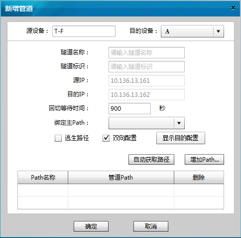
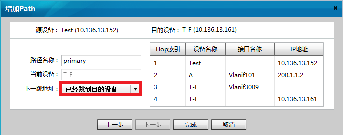

操作步骤
- 进入定义管道对话框
进入增加管道对话框有两种方式，选择其中一种来操作即可。
- 在“Aglie TE View”页面选择“菜单 > Service > 定义管道”。
- 在源设备上单击鼠标右键，选择“定义管道”。

- 在“管道定义”对话框中选择管道的源设备。
- 点击“增加”，弹出“新增管道”对话框。

- 定义管道路径
定义管道路径有自动获取和手动添加两种方式。不论采用哪种，最多只能添加两条路径。其中一条可以作为主路径，一条可以作为备份路径。
- 自动获取Path
- 在“新增管道”对话框点击“自动获取路径”
- 系统弹出“提示”对话框，点击“OK”。
- 手动增加Path
- 在“新增管道”对话框点击“增加Path”按钮。
弹出“增加Path”对话框。

- 填写“路径名称”
- 在“下跳地址”列表中选择要添加的跳数，然后点击“下一步”按钮，将此跳添加到路径中。
- 重复上一步，直到列表中显示“已经跳到目的设备”，此时即路径添加完毕。点击“完成”。
- 自动获取Path
- 填写管道参数
- （可选）勾选“双向配置”，配置本端设备时，程序会自动在目的端设备上下发同样的管道配置。
- （可选）点击“显示目的配置”。点击后对话框会并行显示目的端设备上的管道配置。
- （可选）勾选“逃生路径”。如果勾选后，当主路径和备份路径都发生故障时，管道首节点会发起建立一条临时路径以保证管道的可靠性。
- 点击“确定”完成新增管道的操作。